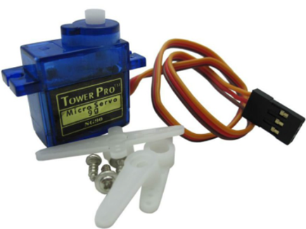
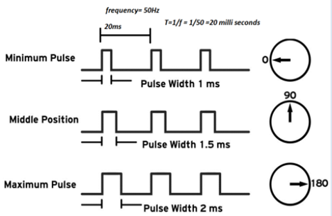
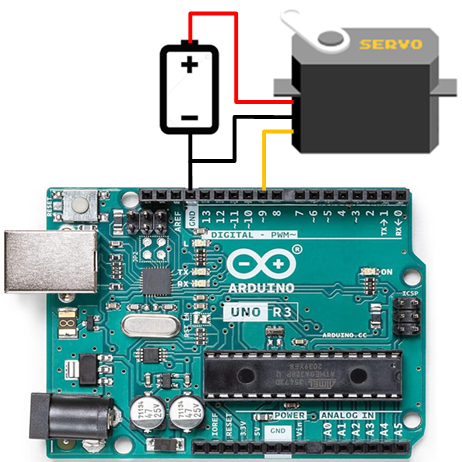

C'est quoi Arduino ?
Servo Moteur
Un Servomoteur est un moteur CC auquel on a ajouté un peu d'électronique et un peu de mécanique pour en faire un positionneur angulaire

Le contrôle de position se fait à l'aide d'un signal PWM

Le branchement avec l'Arduino est très simple, une seule sortie PWM suffit. L'alimentation doit être choisie en fonction des spécifications du moteur

La librairie Servo
La librairie Servo fait partie du package Arduino-IDE. Elle propose quelques fonctions permettant de contrôler facilement un Servomoteur
- attach(pin, [min, max]);
- Initialise la librairie et Définit la pate Arduino connectée au servomoteur
- pin : Broche Arduino qui contrôle le Servomoteur
- [min, max] : Ces deux paramètres sont optionnels. Ils définissent (en μs) la largeur d'impulsion minimale (pour 0°) et maximale (pour 180°), Par défaut [544, 2400]
- A l'exécution de cette fonction, le servo est envoyé à la position 90°
- write(A);
- Positionner le Servo en précisant un angle
- A : Nouvelle position en °
- writeMicroseconds(U);
- Positionner le Servo en précisant une largeur d'impulsion,
- U : Largeur de l'impulsion en µs
- read();
- retourne la position actuelle du moteur (dernier paramètre envoyé par la fonction write())
- detach();
- Libère la broche préalablement attachée par attach()
Commandes avec paramètres
void setup() {
Serial.begin(9600);
Serial.setTimeout(5000);
}